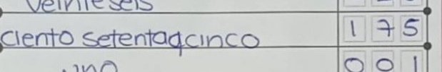
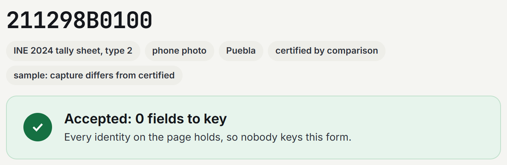
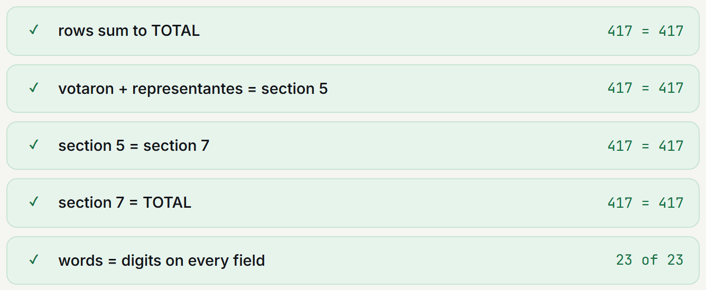
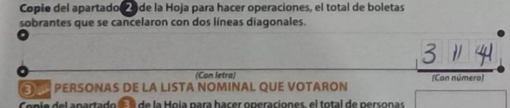
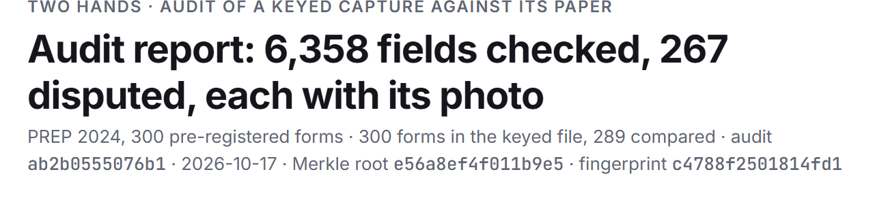
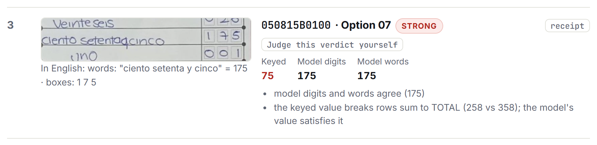

real handwritten tally sheets read by Gemma on AMD
91.6%
field match, vs 62.84% for the reading the state bought
27 of 28
capture errors the certified count reveals, caught (one state, pre-registered)
0 of 484
accepted fields wrong on 100 fresh forms, gate fixed in advance
Two Hands01
The problem, from INE's own files
Two official records of the same paper disagree. Neither says which one is right.

In words: ciento setenta y cinco (175)the paper
In digits: 175the paper
Form 050815B0100, Option 07 (masked, cropped right of the logo column). One of the 52 on our random 300.
The two typed records of this field
Official typed capture (PREP)
75
Certified count
175
The 75 is a typing error in the database, not on the paper.
6.5%
of the 52,167 polling stations not recounted: the preliminary capture and the certified count disagree on at least one vote field
19.2%
of nationally captured tally forms fail their own row sum (26,336 of 137,196)
Double keying copies the paper faithfully but cannot say which paper is wrong. The photo can.
Two Hands02
How it works
The model reads. The paper's own arithmetic decides.
01
Photo
Page located and privacy-masked before it is stored or sent
→
02
Gemma reads
Gemma-4-31B-IT on AMD Token Factory reads every field twice: digits and words
→
03
Arithmetic
words = digits · rows sum to TOTAL · section 5 = section 7 = TOTAL
→
04
Accept or route
All hold: accepted. One fails: a person gets the field, with its photo
→
05
Receipt
Each field a Merkle leaf; the root anchored with OpenTimestamps

An accepted form on the site (211298B0100): every identity holds, so nobody keys it. A second reader, Qwen3.8-27B on AMD, never overrides Gemma: it can only withhold acceptance.

Two Hands03
Results · pre-registered · INE's public data
1,270 real tally sheets read on AMD. 49 capture errors confirmed by the certified count.
Recall, Colima: each dot is a capture error the certified count reveals. Filled: caught. Outlined: missed. One state; not total recall.
1,270
handwritten tally sheets read by Gemma on AMD
49
capture errors confirmed by the certified count, each with its photo
27 of 28
caught, 96% (Wilson 95% 82-99%), pre-registered
0 of 484
accepted fields wrong on 100 fresh forms (gate v2, fixed before the draw; Wilson 95% upper bound 0.79%)
A person re-read the AI-judged disputes blind: 0 read differently.
Two Hands04
Against the incumbent · Baja California Sur, 2024 local actas
91.6% field match, where the reading the state bought scored 62.84%.
Same per-field exact-match metric on Baja California Sur's 2024 local actas: ours on a pre-registered random 300, against the published values; theirs on all 2,020, against the manual capture.
Two HandsGemma on AMD · random 300 actas, pre-registered
91.6%
Google Document AIthe state's purchased reading · all 2,020 actas
62.84%
Ours: 91.58% of 3,622 fields, Wilson 95% 90.63-92.44%. Theirs: 14,501 of 23,077 fields.
Two Hands05
Gemma on AMD Token Factory
Same 300 forms, gate v1: Gemma accepts 1.8× the forms Qwen does, 4.6× cheaper, 2.8× faster.
Reader, on AMD
Forms accepted
Wrong of accepted fields
$ per 1,000 forms
Time per read
Gemma-4-31B-IT
55 of 300
2 of 1,210
$0.14
87 s
Qwen3.8-27B
31 of 300
1 of 682
$0.64
241 s
Both must agree, the paper's sums as referee
89 of 300
0 of 1,958
$0.78
–
Rows 1-2: the first gate (v1) on the pre-registered 300. Row 3: two readers, a lighter gate, a secondary analysis. Gate v2 on 100 fresh forms: slide 7. Source: app/data/bakeoff_300.json. Time per read: wall clock in the 300 run (2 in flight, our own pacing). Throughput, measured separately on the shared endpoint: 4.8 forms/min with 4 in flight, 32 s median (results/throughput_sweep.json).
$0.14
Colima, a whole state: all 982 located presidential sheets, read by Gemma on AMD.
Two Hands06
Where it holds, and where it breaks
Read 3114, paper 314. Gate v2, fixed in advance, sends it to a person.

Words line: blankno second reading to compare
The paper: 314in digits
Form 070212B0100, unused ballots (masked crop).
The blind spot
The model read 3114. Unused ballots sit in no identity: no sum can catch a digit inserted here. The first gate would have accepted it.
Held out
Gate v2 (digits and words both read and equal) was fixed before 100 fresh forms were drawn. On them: 0 wrong of 484 accepted fields (Wilson 95% upper bound 0.79%).
Scope
By design, an audit of the typed values: most forms go to a person, and the auditor sees only the disputed fields. Not an official INE product.
Two Hands07
Business at a glance
An independent check of the keyed values. $1 per sheet audited (proposed).


The auditor looks at 267 of 6,358 fields (4%), each with its photo.
The product: the audit report, strongest first, sealed by one Merkle root.
Buyer
INE and the 32 state institutes, each with an outside auditor.
Why now
6 June 2027: the federal midterm and 32 concurrent local elections. First step: a paid shadow-mode pilot on one state's count.
One state, priced
Morelos paid MXN 26.6M to run its 2024 PREP. Our check of every sheet: about MXN 143k, 0.5% of that. The federal count, 169,005 sheets: about $169,000.
Next
At least 7 more countries publish the same tally data; health reporting on DHIS2 in 70+ countries.
Two Hands08
Check it yourself
Every number re-derives from public data.
Reproduce
make eval
Recomputes every number offline and checks it against what the site shows.